01 / MDC400
Mini dust collector
680 m³/h · 1 HP · bag filter · stated filtration efficiency of 99% at 5 microns.
Dust collection equipment and engineered systems for manufacturing and process environments. Configured around your material, capture points, airflow requirements, and site conditions.
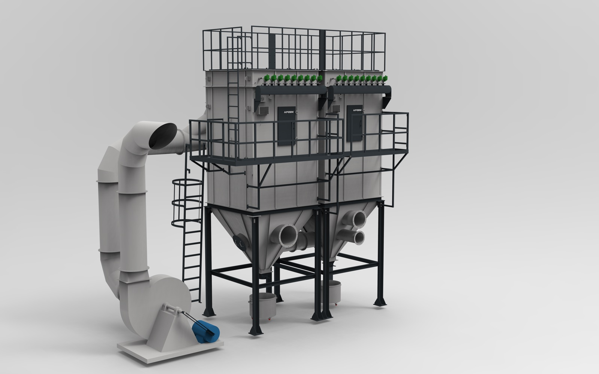
Effective dust collection starts with the material and the point of generation. Airflow, capture method, filtration, duct routing, and operating conditions all inform equipment selection.
Share your process and site requirements to discuss a suitable collector or complete collection system.
680 m³/h · 1 HP · bag filter · stated filtration efficiency of 99% at 5 microns.
2,000 m³/h · 3 HP · primary cyclone and secondary cartridge filtration with automatic pulse-jet cleaning.
3,500 m³/h · 7.5 HP · SS304 construction · stated filtration efficiency up to 99% at 3 microns.
A range of collector types for different materials, processes, and operating requirements. Final selection depends on application-specific engineering review.
Explore equipment for individual workstations, production lines, and centralised dust collection systems.
Explore the equipment range ↓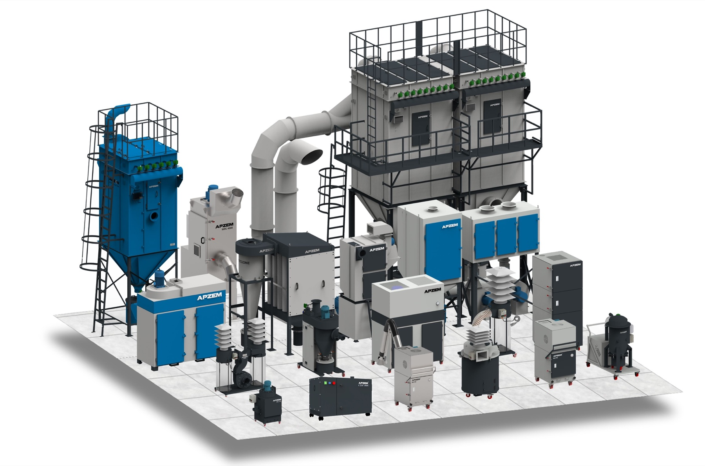
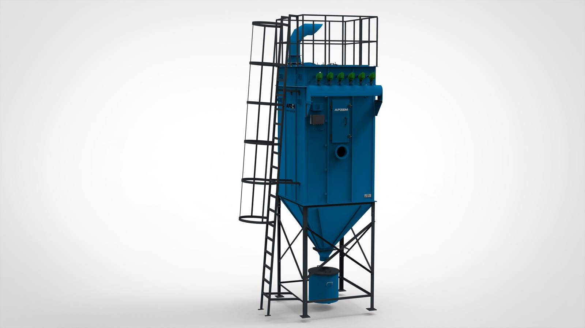
Fabric bag filtration with pulse-jet cleaning. System sizing depends on gas flow, dust characteristics, and operating temperature.
View details →Cartridge filtration for industrial dust collection. Contact the team for model-specific airflow and filter data.
View details →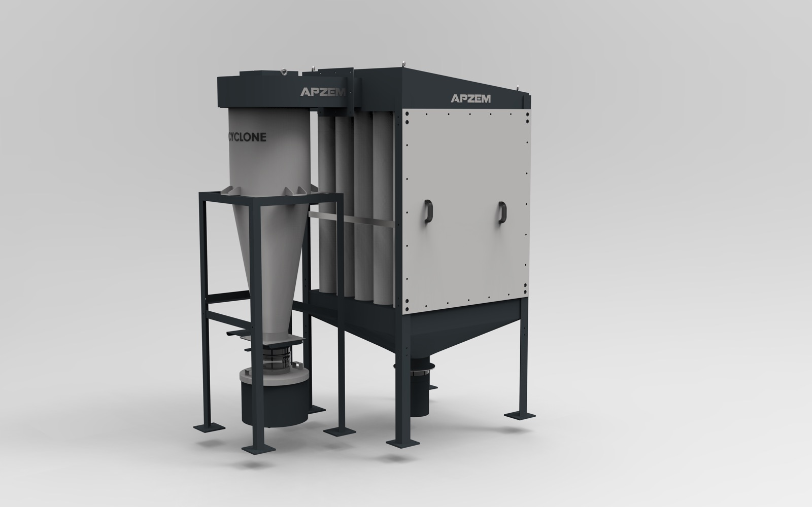
3 HP and 5 HP models listed, with outlet bag filtration. Confirm airflow and configuration for the selected model.
View details →Baghouse collection systems. Filter area, airflow, and construction are selected for the process duty.
View details →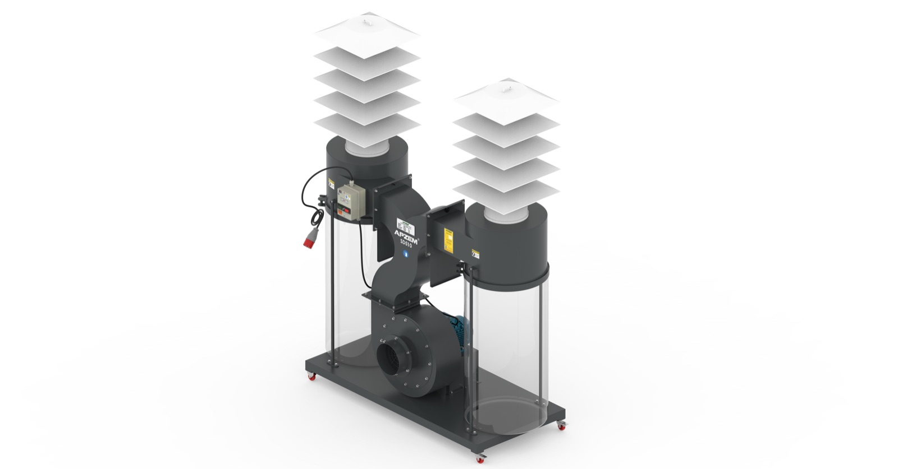
SD510 · 3 HP · triple inlet · double collection bag. 30 μm bag filter standard; 5 μm option listed.
View details →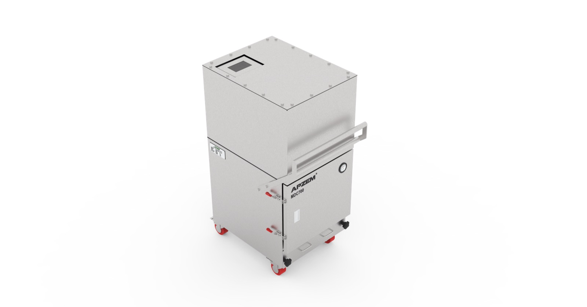
1,190 CMH · 2 HP · SS304 · bag filter rated 99% at 5 μm · 750 × 750 × 1,400 mm.
View details →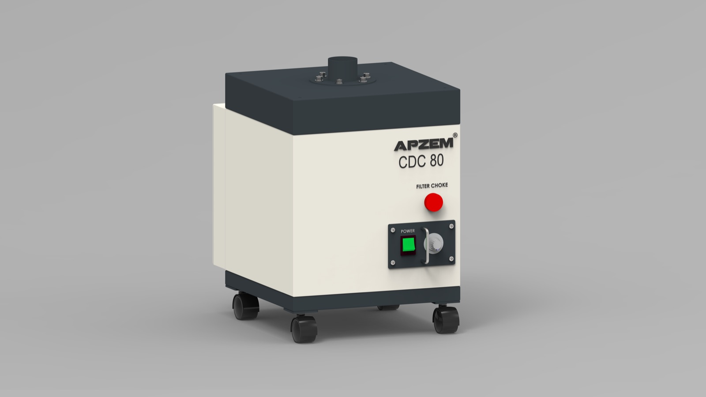
CDC80 · 195 CMH · 1.2 kW · pre-filter + HEPA · stated efficiency 99.99% at 0.3 μm.
View details →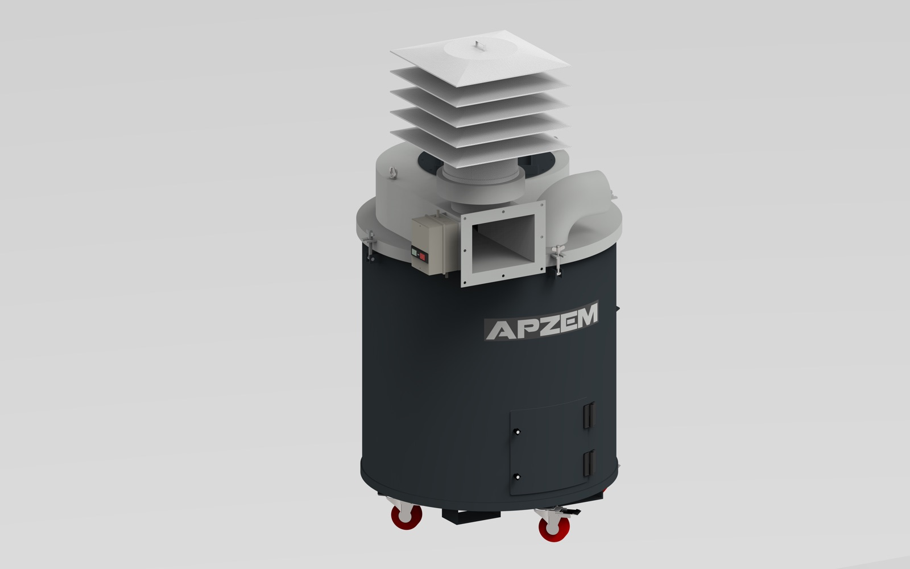
TD760 · 2,000 CMH · 3 HP · 150 mm inlet · bag filtration rated 99% at 5 μm.
View details →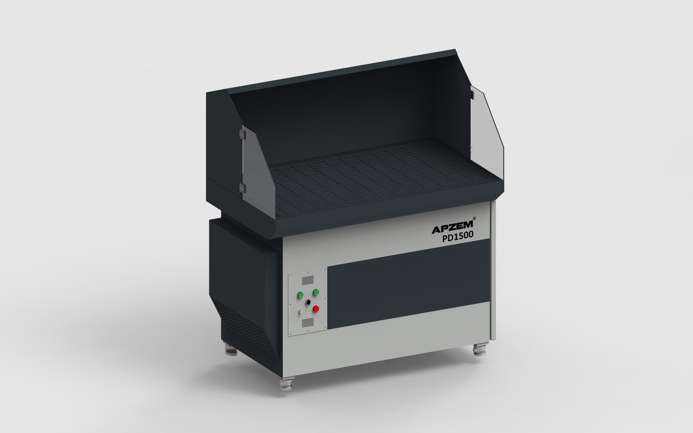
1,500 CMH · 3 HP · automatic pulse cleaning · cartridge filter · 99.9% stated for 0.2–2 μm.
View details →PDC01 · 1,360 CMH · 2 HP · SS304 construction · antistatic polypropylene cartridge filter.
View details →Dry-type booth. Confirm booth dimensions, airflow, and filter configuration against the painting process.
View details →Portable dry-type booth. Confirm dimensions, airflow, and filtration requirements for the application.
View details →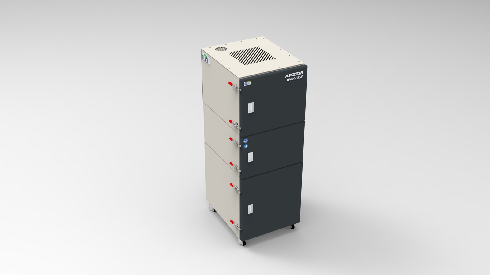
HVDC-3KW model shown · high-vacuum source extraction. Request model-specific airflow and filtration data.
View details →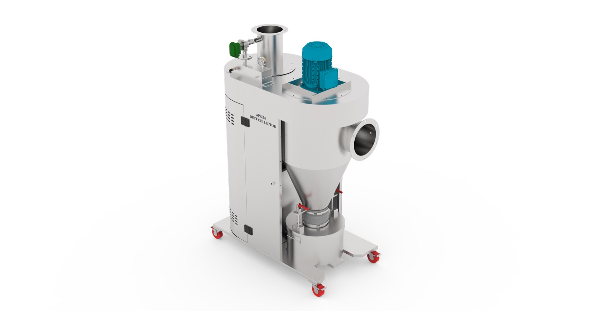
TD860 · 2,380 m³/h · 5 HP · cyclone + cartridge stages · automatic pulse cleaning · up to 2 μm stated.
View details →3,500 CMH · 7.5 HP · SS304 · stated efficiency up to 99% at 3 μm.
View details →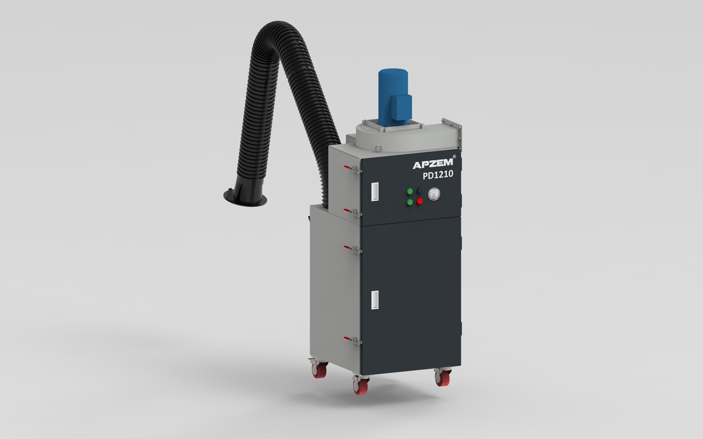
1,290 CMH · 1.5 kW · MERV 15 cartridge · automatic pulse cleaning · 150 mm inlet.
View details →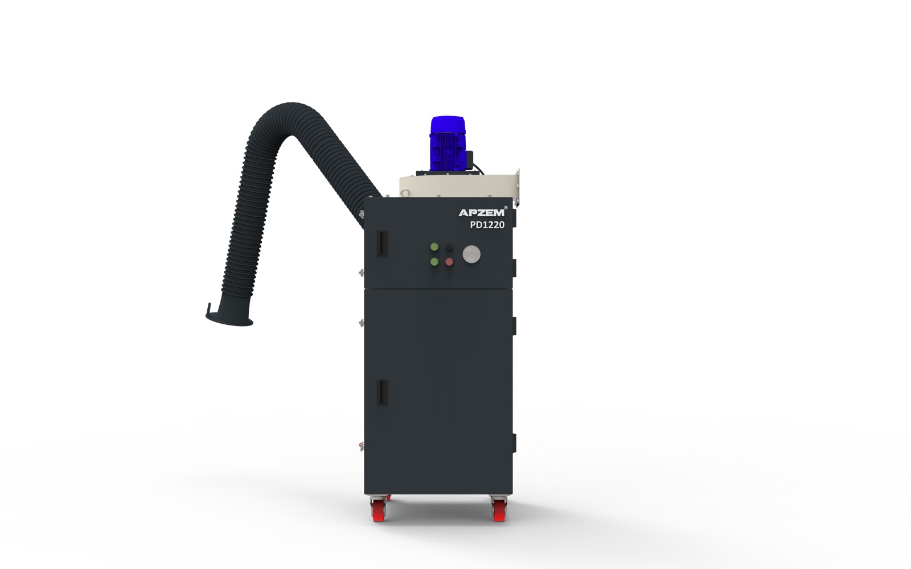
2,000 CMH · 2.2 kW · MERV 15 cartridge · two-stage filtration · automatic pulse cleaning.
View details →Provide details about your material, process, dust generation points, operating hours, and site conditions to begin a technical discussion.